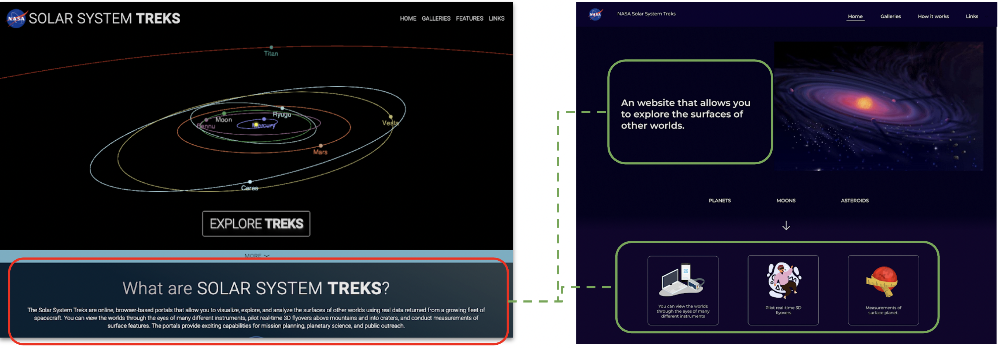

Methods
Tools
This project is a collaboration between Chalmers University and UI engineering team at JPL, NASA
Challenge
The Solar System Treks website aims to introduce and educate public users to the space exploration domain. The JPL NASA wants to improve the efficiency and usability of the website. There is 3 types of target users But because of time constraint I chose to focus on .., this website has not been evaluated with public users.
Aims
This project aims to discover and improve the existing usability issues, focusing on the navigation and layout
Understand & Define problems
Remote Usability Testing
The target user is public users. They are one of the main targets of this website. The 6 users who were interested in the space exploration context were recruited via the invitation from the designer.

Insight#1
Cannot instantly capture website's concept and what it can do
The participant behavior shows that they scrolled through the whole page at a fast pace and skipped all the text areas The website has to provide precise and brief information for users to create their mental model in a short time.
Result:
For them to quickly understand the concept and see the text clearly, the text needs to be contrasted from the background and write in brief and clear to convey the meaning. Dividing the long text to illustrator helps users to grab the information quciker.
Insight#2
Users’ cognitive workload and navigation
Users complained about both the layout and the time they spent accessing the information or follow the instructions. This made them felt stupid, lost and frustrated at the same time.
Result:
Creating a new accessing information flow and reformulating the instruction helps users to achieve their goals faster. Also showing where they currently are on the website, helps users easier to go back to the main route.
Insight#3
Unstructured and inconsistency layout
The user complained about the difficulty in reading a text and noticing different buttons and elements on the website.
Result:
Reorganizing all the layout and placed the components separately which results in increasing the readability on this page and also the efficiency of the website.
Brainstorm & Sketch
I started to brainstorm the potential design solution by researching the museum, art galleries and space education websites. The reasons are
- The similarity of the amount of information and purpose of the website
- They would like to educate, present information in various forms (e.g., video, photo, text)
- There are some common methods in organizing information and navigation.

Wireframe
Main feedback from usability testings
- The new navigation is significantly reduced time usage on the relevant tasks. However, the layout of the available Treks portals positions still confused
- Translating the text instruction to illustration helps solve the confusing issue. Users easily spot the instruction and can follow them step by step
- The redesign carousel is the better choice. But when users were asked to read a previous 6-month ago article, the mechanism for this design could not fulfill the task

Iteration and Hi - fi prototype
During the design phase, two high-fidelity prototype iterations were created. The first one was created to experiment and solve the issues for instance the color themes, component designs and fonts.
The second iteration has a more focus on refining the hi – fi prototype, putting the description and fixing the issues according to JPL feedback.
Solutions
- For them to quickly understand the concept and see the text clearly, the text needs to be write in brief and clear to convey the meaning
- The description was divided into two parts. The overall concept of the website and What user can do on the website
- The content related to the function of the website was divided into three parts and match each of them with a graphic
- This will help users to quickly understand what this website can do and what they can expect
- Showing all the main portals on the middle of the screen instructs users what they can expect
- By enlarging the chosen portal together with the header, tells the user where they currently are
- The primary button color is in contrast to the background, so users can easily spot on
- Reorganizing all the layout and placed the components separately which results in increasing the readability on this page and also the efficiency of the website
- By having this simple navigation when entering the “Galleries” section will inform the user where they currently are and what they can do on this section
- The complaints about the wall of text on this highlight subsection were solved by showing brief information only for rising curiosity and creating an understanding of the story
- The design solutions for the Content carousels have a page number and arrows below the thumbnail to inform the user that there is more content next from this and how many.The arrows will be easier to spot in this design compare to the current website
Small feedback from JPL NASA
“We really appreciate how you clean up this site and made it much more friendly. We will use this as a guidline for the future UI” - JPL, NASA
Design System
As the team does not have a design system. They might face a UI consistency problem in the future. The design system is a design guidline of the project. It has many benefits when it comes to expand the product or use as a guideline for a development. The system is composed of tangibles and non-tangibles elements such as tools for designers & developers, patterns, components, guidelines, etc.
However,this is an initail desgin system from this project that might searve as a foudation of the future development

Reflections
The user research and usability testing are the importance stage of digital product developement. The webiste design might go to the wrong direction. To answer the user experience assumtion from the develpment team, the website should be tested with target users. Foe this website, I found the main works that can improve the usability and working process in the UI team can be seen below.
User research
The website is designed for three different types of users. It is very challenging to design for all-in-one website because there are different needs for each target. This project is only focused on one target of a user from three main target groups. Also, there are many categories of the target user. To design a website that fulfills the user expectation, the team needs to conduct more user research.
More understanding behind the design of the website
If the designer had more understanding of the reason behind the design of every component, the huge change on the first iteration on hi – fi prototype might not happen. The designer cannot take out the original design component based on the usability testing data. He/She needs to understand what the purpose behind that is and make it better according to the feedback.